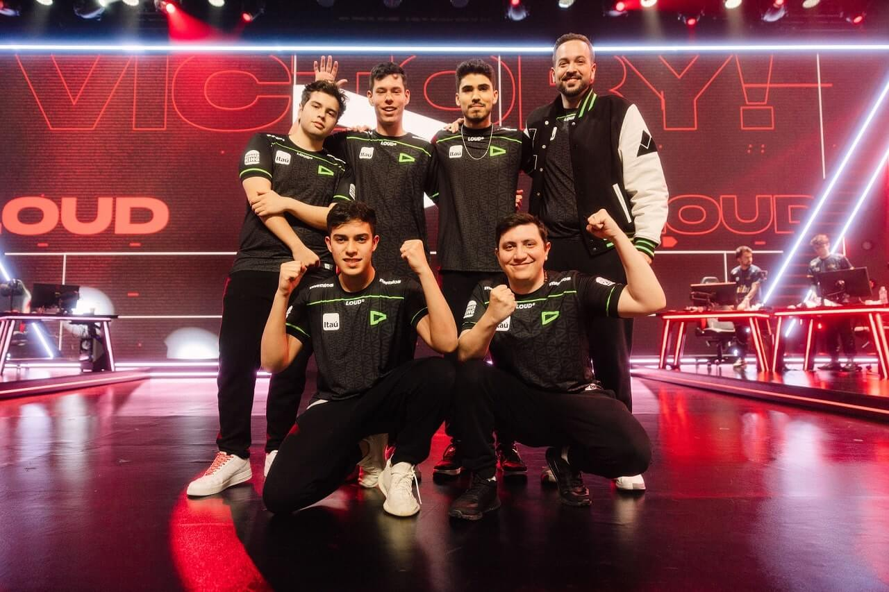

O primeiro mapa Split, escolha da C9. O time norte-americano saiu na frente e rapidamente abriu um 5 a 0. A LOUD no lado defensivo mostrou algumas fragilidades com o estilo de jogo do time adversário. Apesar da dificuldade, o time brasileiro conseguiu alguns rounds e a primeira metade ficou 8 a 4 para a Cloud9. Na segunda metade, a Cloud9 seguiu liderando e cometeu poucos erros para a LOUD jogar em cima disso. Na reta final, a equipe brasileira chegou a descontar alguns rounds, mas não deu, a vitória ficou com a C9 por 13 a 7.
Na segunda metade, a Cloud9 seguiu liderando e cometeu poucos erros para a LOUD jogar em cima disso. Na reta final, a equipe brasileira chegou a descontar alguns rounds, mas não deu, a vitória ficou com a C9 por 13 a 7.
O primeiro mapa Split, escolha da C9. O time norte-americano saiu na frente e rapidamente abriu um 5 a 0. A LOUD no lado defensivo mostrou algumas fragilidades com o estilo de jogo do time adversário. Apesar da dificuldade, o time brasileiro conseguiu alguns rounds e a primeira metade ficou 8 a 4 para a Cloud9.
Na segunda metade, a Cloud9 seguiu liderando e cometeu poucos erros para a LOUD jogar em cima disso. Na reta final, a equipe brasileira chegou a descontar alguns rounds, mas não deu, a vitória ficou com a C9 por 13 a 7.